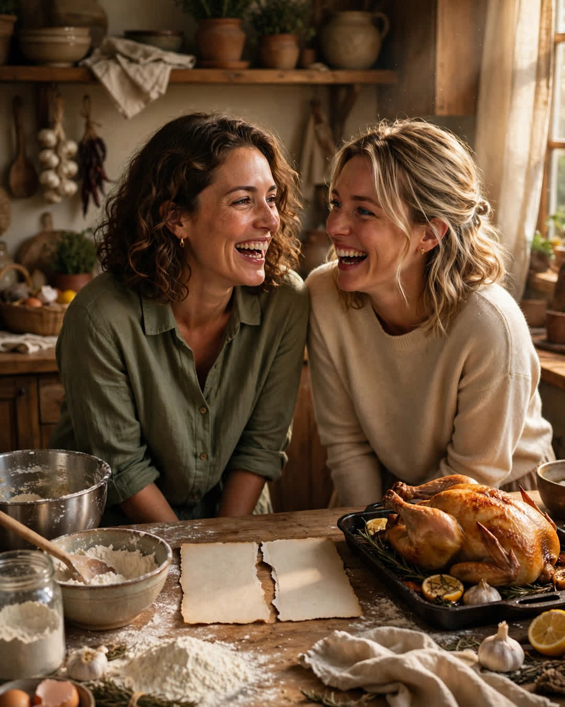

The Recipe in Two Halves
A Clipp Kaili original story

When our mother died, she left my sister exactly half a recipe, and she left me the other half. On purpose.
The card was for her Sunday chicken — the dish our whole town asked about and she never once wrote down for anyone. At the reading of the will, the lawyer produced two envelopes. Inside each was half of an index card, torn clean down the middle with the jagged edge of a woman who meant business.
My half had the ingredients, listed in her tidy hand, down to a smudge of vanilla beside the last line. Rosa's half had the method.
Neither half worked alone. I knew it needed "a pinch of the green jar" but not the temperature, the time, or the secret step written in Mom's handwriting on Rosa's side: (Don't skip the resting, baby. That's where the love gets in.)
Rosa called me that night. We hadn't cooked together since we were teenagers fighting over a stool in that kitchen. "Well," she said, "she finally got us."
"Mom always did play the long game," I said.
The first Sunday, we cooked it at her house, cards laid side by side on the counter like two halves of a map. We argued about the green jar. We argued about whether "a while" meant twenty minutes or forty. We burned the first attempt so thoroughly that the smoke alarm joined the conversation. And somewhere between the second try and the gravy, Rosa said, "You know she could have just given it to one of us," and I said, "Then only one of us would have shown up."
That was the recipe. It had always been the recipe.
We have cooked that chicken together almost every Sunday for three years now. Some Sundays at her house, some at mine. Her daughter has started standing on the stool we used to fight over, reading the ingredients off my half in a serious little voice. My son reads the method off Rosa's. The card stays torn. People keep suggesting we tape it, copy it, laminate it whole.
We won't. A whole card could be filed in a drawer. A torn one has to be carried — by two people, to the same kitchen, on the same day.
Last month Rosa asked me what we'll do when one of us can't come anymore. I told her the truth: "Then our kids will have to call each other. Which is exactly what she wanted."
Mom didn't leave us a recipe.
She left us a reason.
Some inheritances are money. Some are houses. Ours is a chicken dinner that takes two daughters, one torn card, and every Sunday for the rest of our lives — and I have never felt richer in my life.
This story is a work of fiction, written to touch hearts and bring families closer.
← Back to all stories